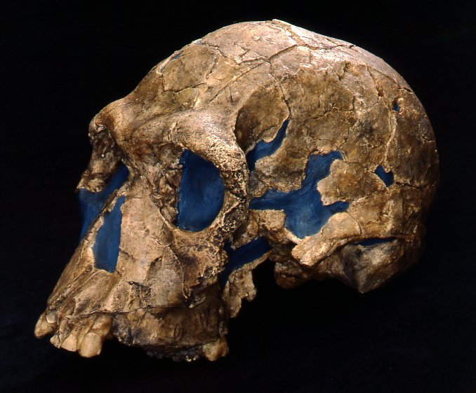
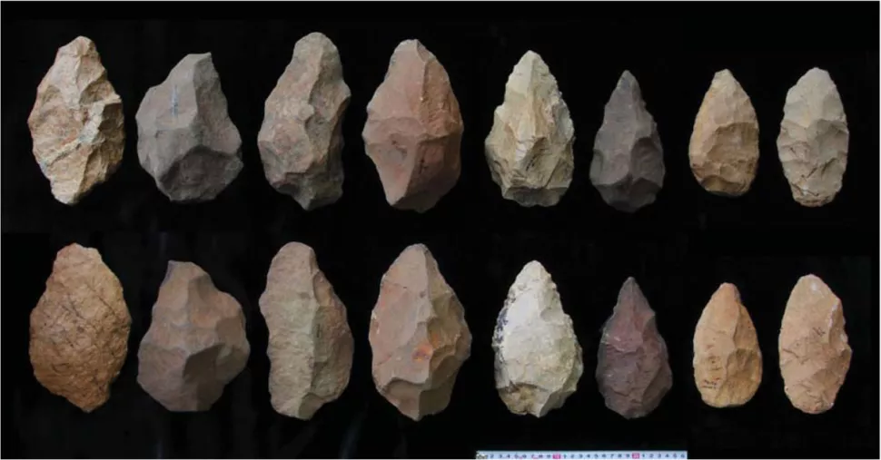
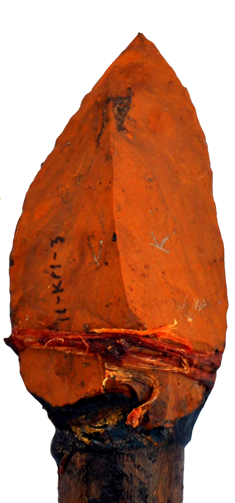
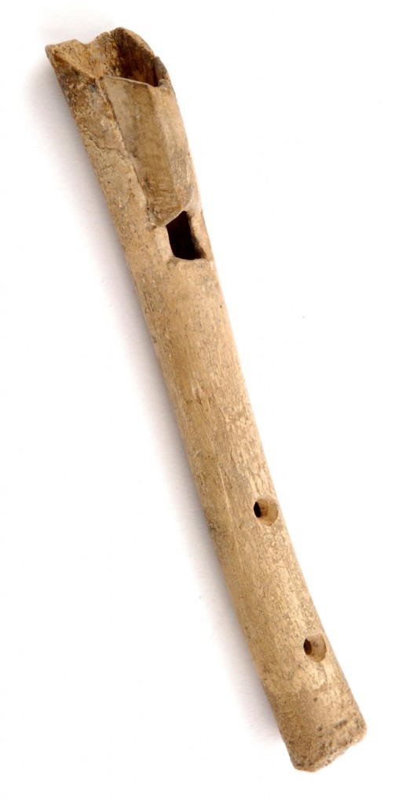
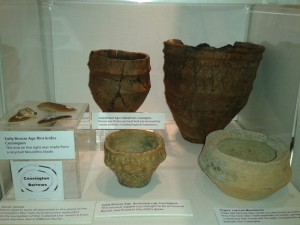

Homo habilis, also known as the Handy Man(and whose existance as a distinct species is a subject of heated debate),was a wonderful little creature who didn't know what a credit score was. He might be human, but that depends onyour definitiion of that is, at least scientifically. I wouldn't let this little guy drive a car, but I think I would let him help me out in a garden, even if he would sooner turn my terracotta pots into a handaxe than actually be much help. They didn't make many tools, but what they didmake has a thousand different uses, most of them are food related though, I will give you that.

This is a homo habilis skull, she seems nice. I bet she ate a lot of berries.

Here is am image of tools from the Olduwan Industrial Complex, a time period during the stone age lasting for one million years, and ending 2.6 million years ago.
Many More Made Tools After That Guy
But what is more fun is the kinds of tools they were able to make.They made all kinds of things, in all kinds of places. Still made of stone and wood, but utlizing our remarkable ability to aim at things in the distance and actually hit them with a reasonable level of accuracy, we have moved on to spears.Although at first a thrusting weapon, and still easily used that way, humans (not homo habilis) have developed the design to allow it to be an accurate throwing weapon, probably good for us, since we are not very strong or fast compared to what could eat us or what we could eat. Along with spears there were arrows, scrapers, knives, musical instruments, and jewelry, because you gotta look good for your crush even in neolithic times.

This is a replica of a stone age spear, it was made by scientists who analyzed 210 stone tools and then flintknapped this spear. After that they damaged it intentionally to simulate repeated use.

This is a bone pipe or flute, you can imagine ancient people getting together around a fire and singing and dancing around to the music.
Back To The Past
While I do at times wonder what a stone age human would think of modern technology, I don't think it would melt their brains all that much(only a little bit).
As long as there's food and a place to sleep I think they would be fine. I think it's most fun to imagine how I well (or not well at all) I would have done alongside them. Even the ones who looked most like modern humans would have more
stamina in their pinky than I do in my whole body.
To Be Honest I Would Probably Die
But like, go forward a bit to still the stone age but when we also have farming, I think I would do alright. Except I like plumbing and
I think that going back in time would not be very fun, I like that we as humans have developed technology that lets me be a lazy little gremlin. I WISH I had the talent it took to make some pretty jewelry out of shells or something.

This is pottery from the neolithic period on display at Charnwood museum.